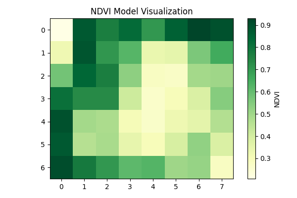

🌿 Crop Health Report
NDVI Analysis Plot

Zone
NDVI
Health
Suggestions
(0,0)
0.558
Good
✅ Maintain current practices.
🌾 Apply precision fertilizer.
📅 Plan harvest based on NDVI trends.
Close Dashboard